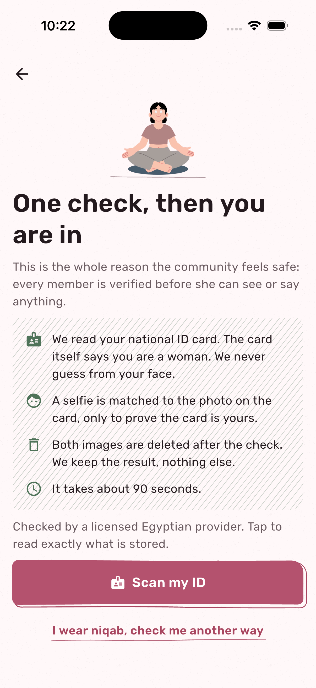
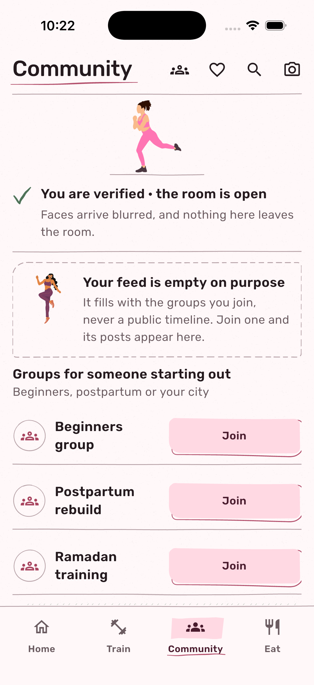
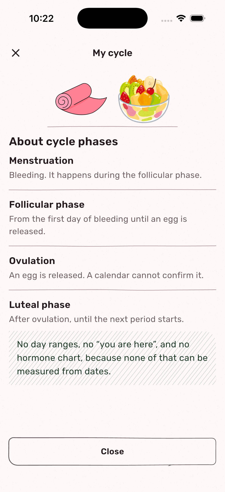
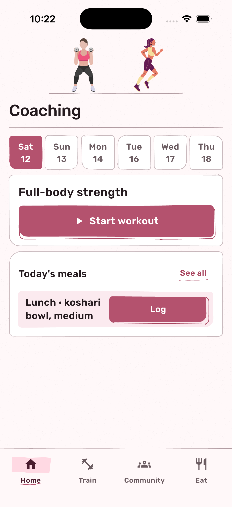

Women only.
Checked,
not guessed.
We read your national ID card.
The card itself says you are a woman.
We
never guess
from your face.
Faces arrive blurred.
Your logs, your weight, your photos.
They
never
leave your phone.
Four questions. Then the week is yours.
Training by cycle phase is not supported by the evidence.
Symptoms
are.
So it asks how you feel.
Then you choose.
her call
One tap logs the set.
Meals in the size you actually serve.
Real coaches. Real plans.
You are paying a person, not a subscription.
She keeps 80%.
Own Hub
Arabic and English.